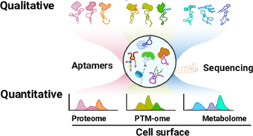

Single-Cell Aptamer Sequencing Technology
With the rapid development of high-throughput sequencing, life science research is moving from qualitative descriptions toward precise quantitative analysis. Yet direct detection of non-nucleic-acid biomolecules such as proteins and glycans remains technically challenging, limiting the construction of multi-dimensional molecular maps. To address this, we developed aptamer sequencing (Apt-seq), enabling high-throughput parallel quantification of proteins, glycosylation modifications, and transcriptomes at the single-cell level for the first time.
We introduced the concept of “Aptomics,” integrating the high-specificity recognition of aptamers with high-throughput sequencing to establish a new multi-omics analysis framework. Using a sialic-acid-specific aptamer, we dynamically captured glycosylation remodeling during T cell differentiation: sialic acid levels rise markedly upon activation of resting T cells and decline at terminal differentiation. This reveals a key role of glycosylation in immune activation regulation.
The Apt-seq platform breaks the quantitative barrier for non-nucleic-acid molecules and enables simultaneous profiling of diverse biomolecules that are directly or indirectly sequenceable. It provides a powerful tool for decoding complex biological systems such as tumor heterogeneity, advancing quantitative life sciences. This work, titled “High-Throughput Multiplexed Quantification of Molecules by Aptamer Sequencing (Apt-seq) in Single Cells,” was published in Journal of the American Chemical Society (JACS) in 2025, with Xiaoqiu Wu as first author.
